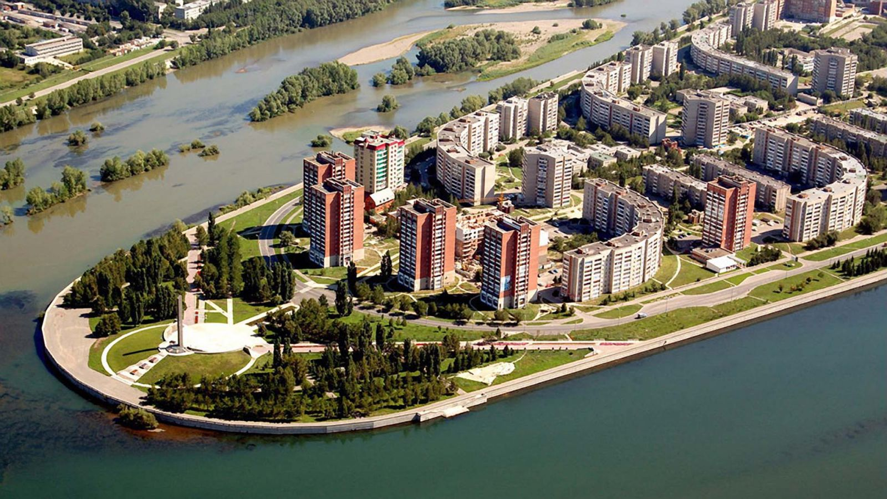
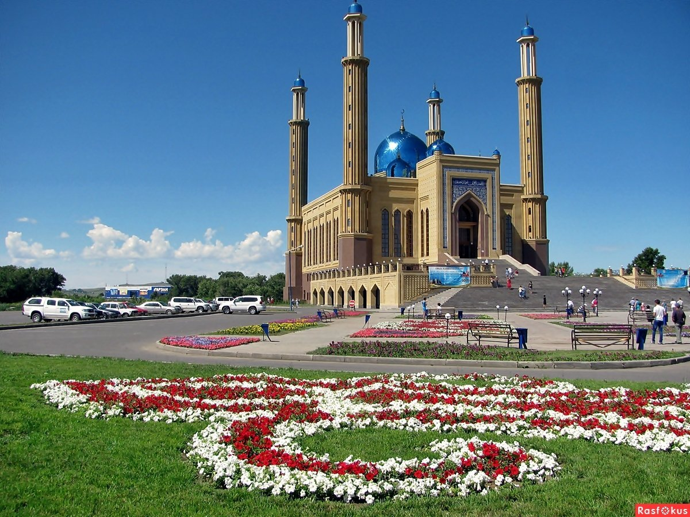
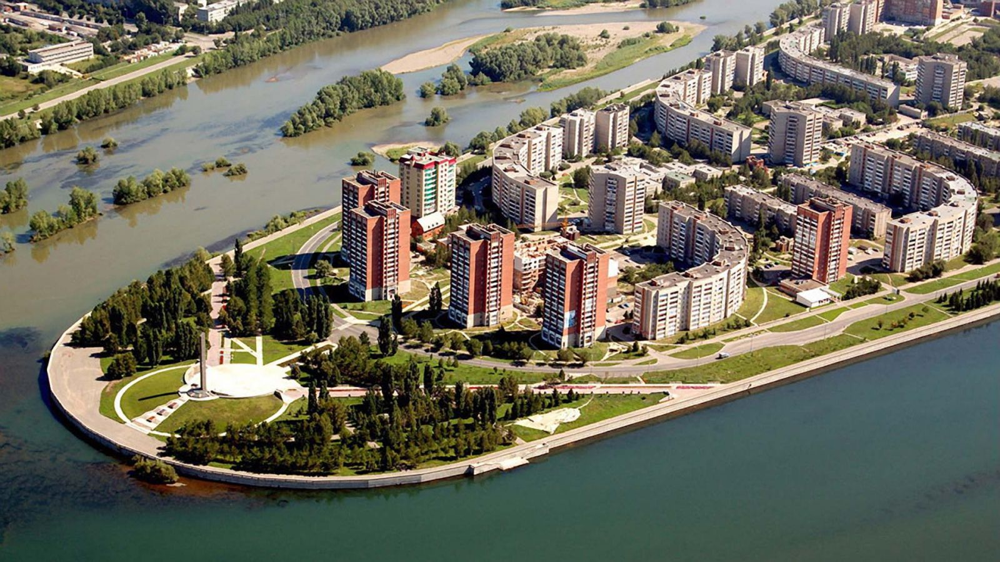
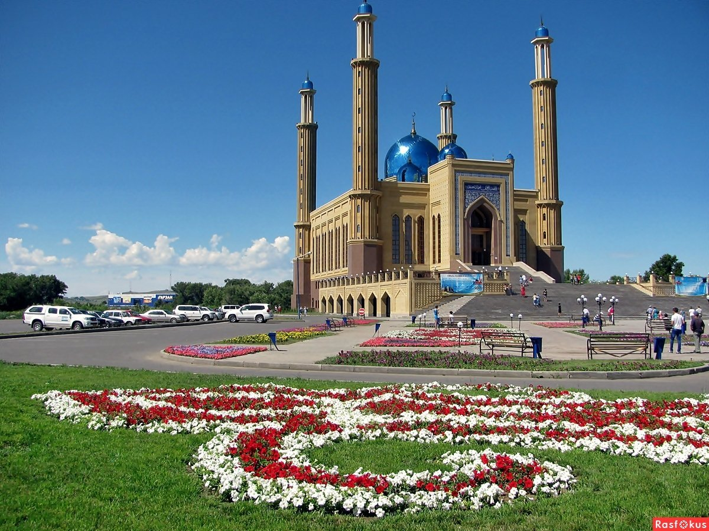
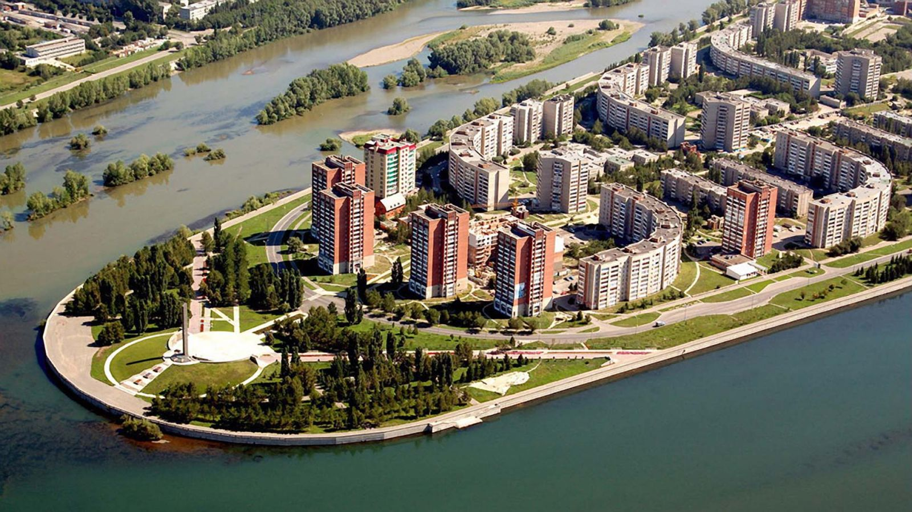
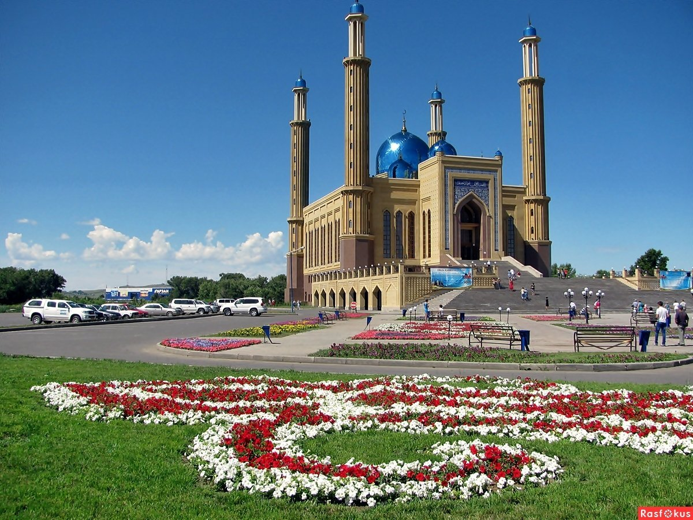
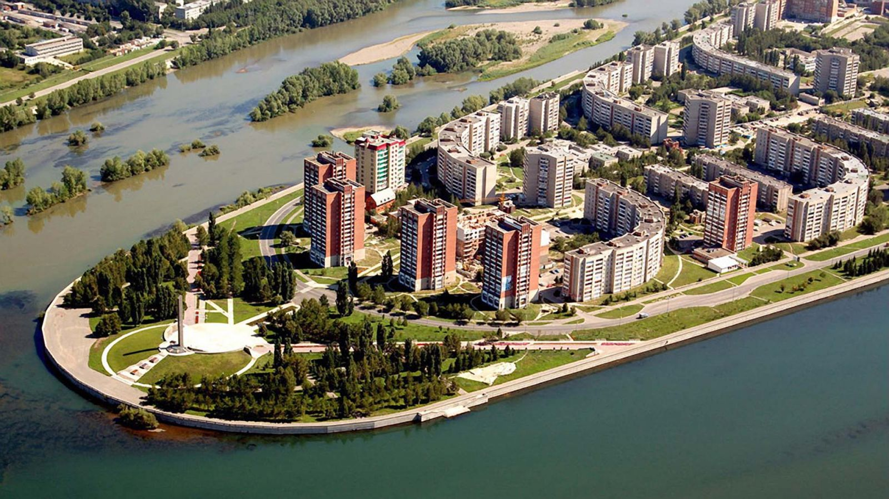
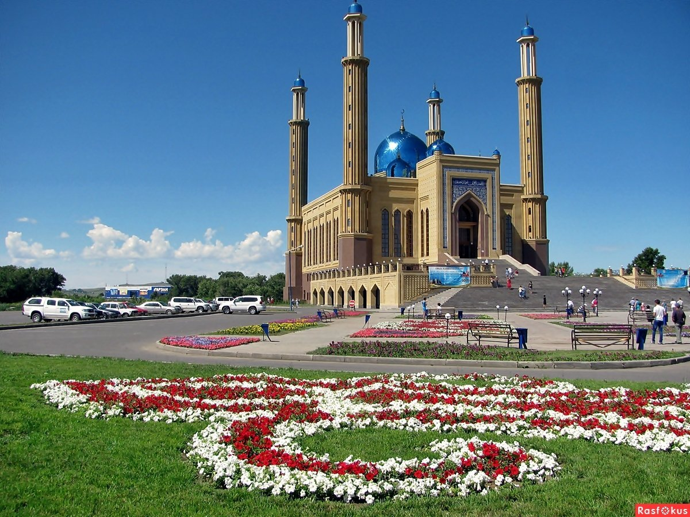
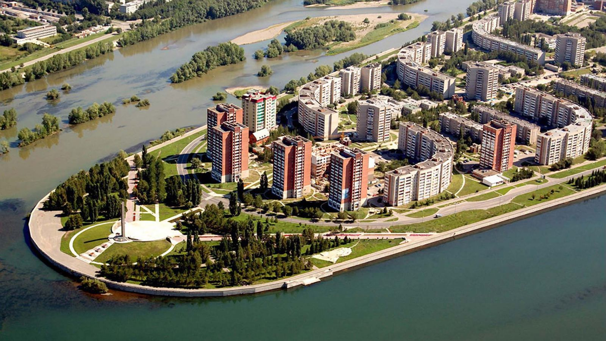
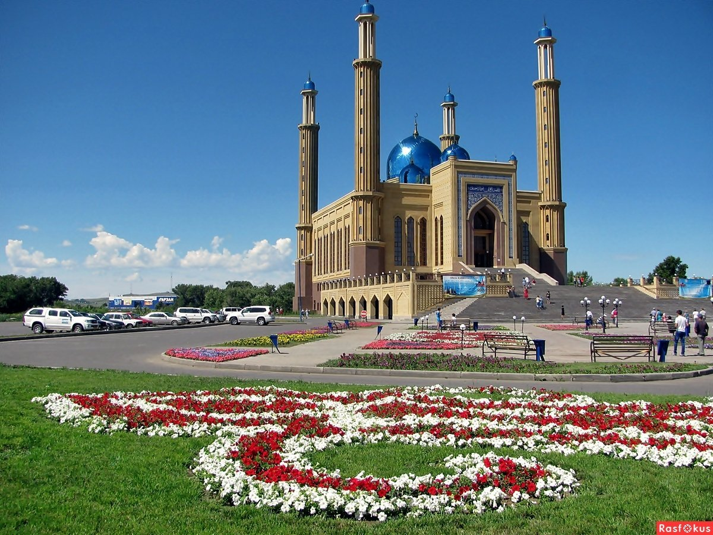

Усть-Каменого́рск — крупнейший город на востоке Казахстана, административный центр Восточно-Казахстанской области с 1939 года.
В мае 1720 года экспедиция майора Ивана Лихарева, снаряжённая по указу Петра I, направилась к озеру Зайсан. До озера дошли благополучно, но дальнейший путь по Чёрному Иртышу преградил большой джунгарский отряд. Нападения были легко отбиты, однако двигаться дальше не позволил сильно обмелевший Иртыш. Экспедиция повернула назад. 30 августа 1720 года военный отряд русской армии прибыл к месту слияния Иртыша и Ульбы, где начались работы по строительству крепости. Этот день принято считать днём основания города.

